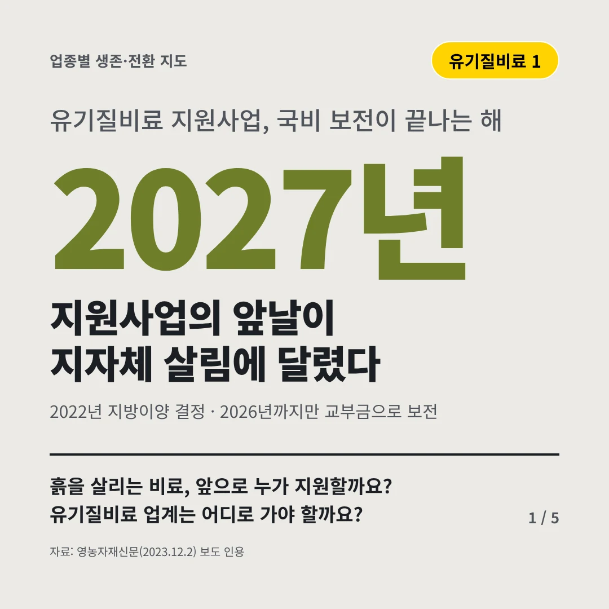
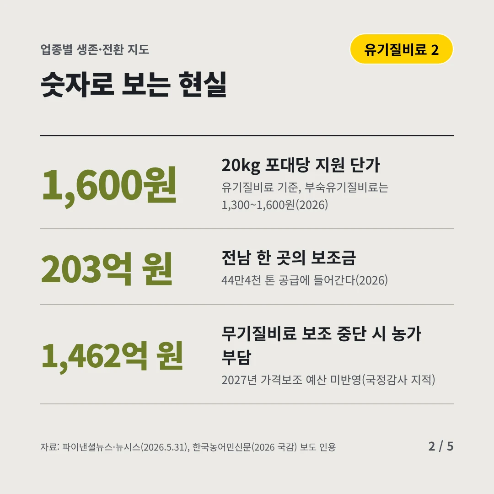
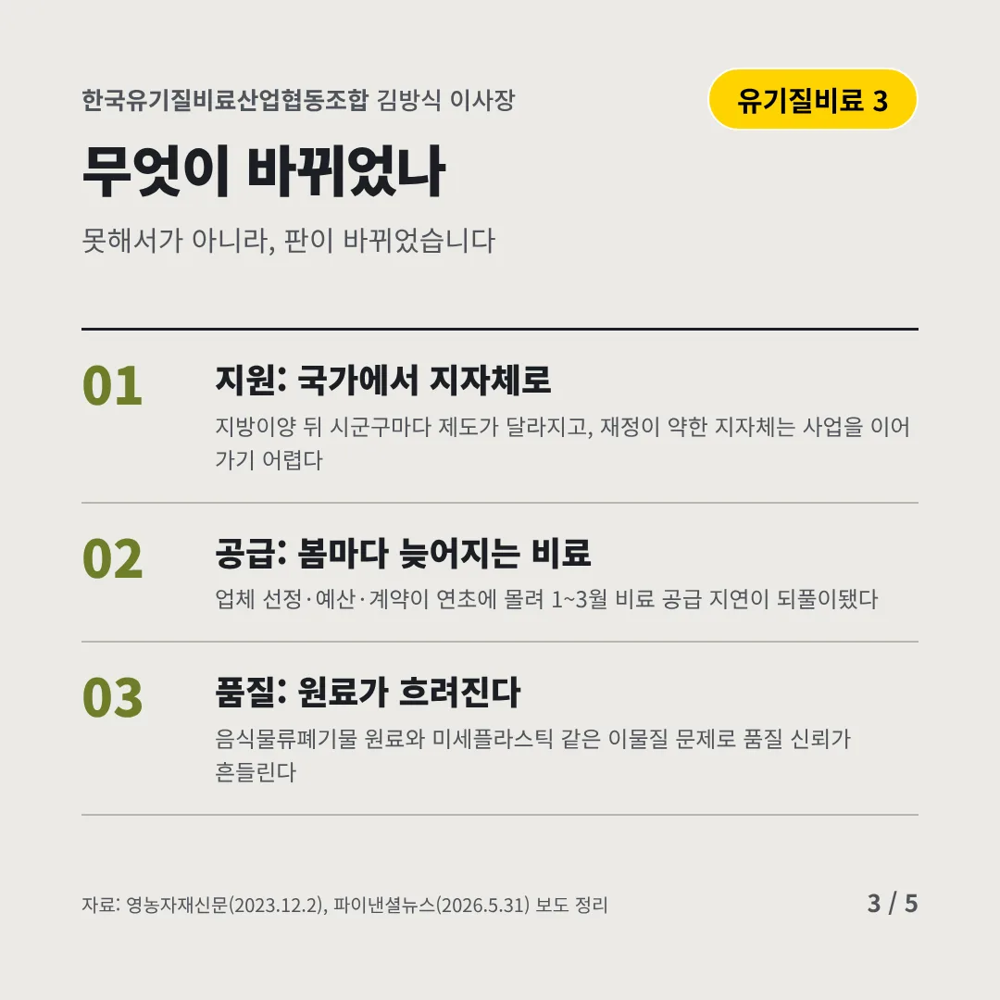
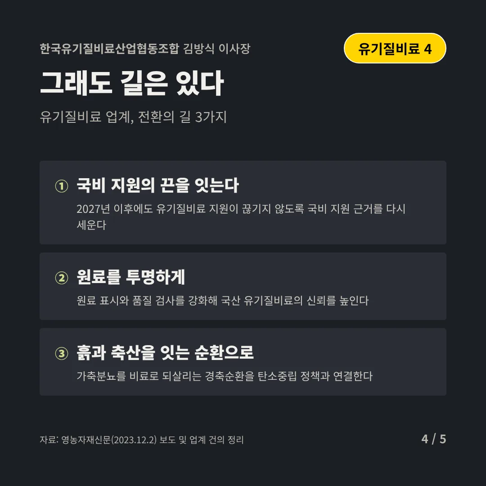
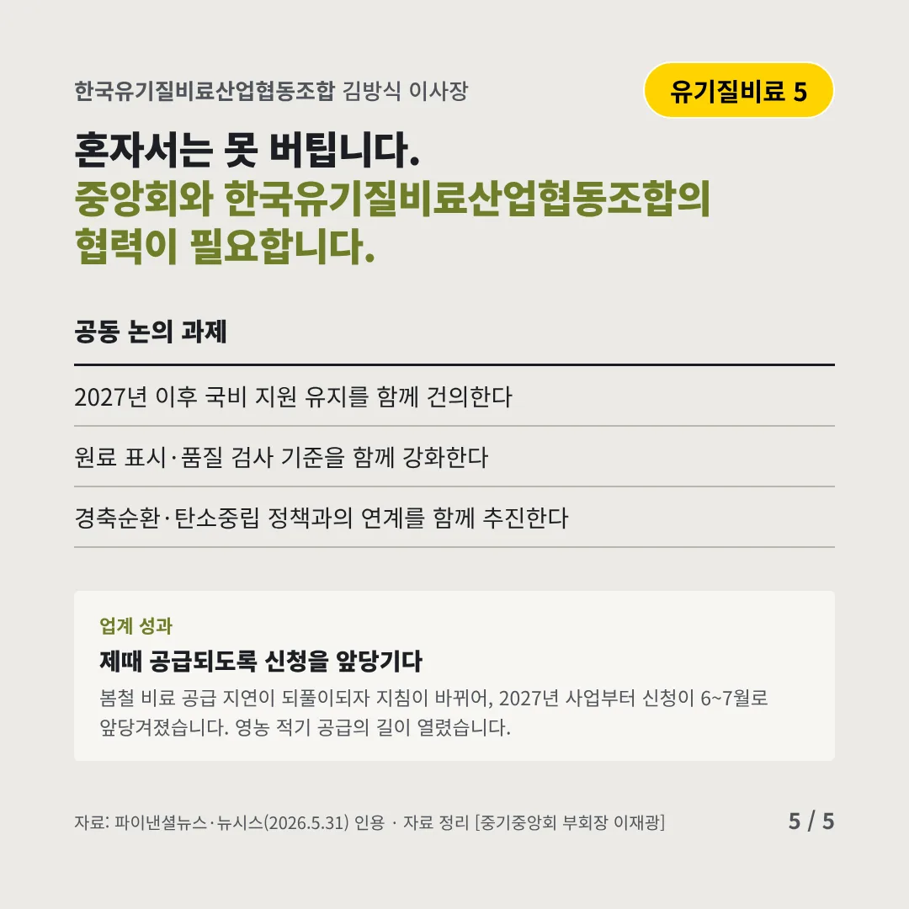
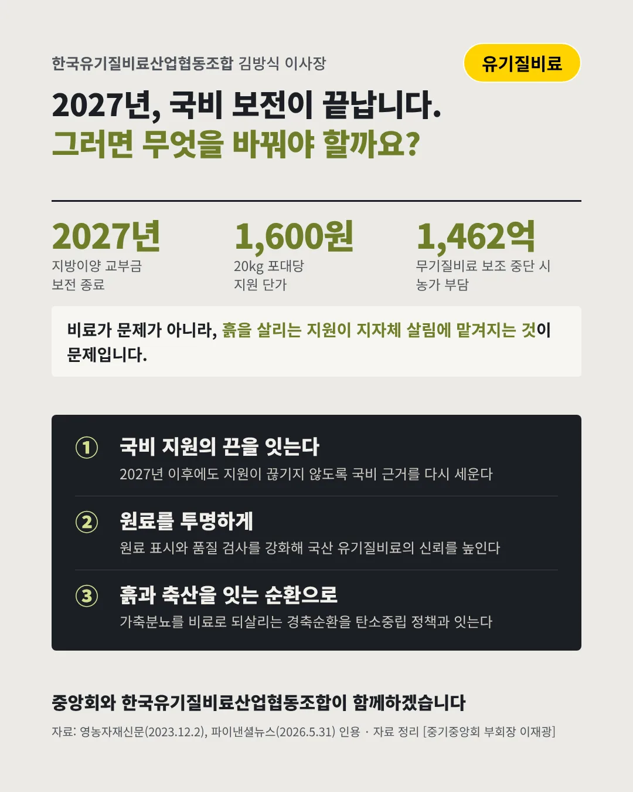

한국유기질비료산업협동조합김방식 이사장
지원사업의 앞날이 지자체 살림에 달렸다
2027년 유기질비료 지원사업, 국비 보전이 끝나는 해






흙을 살리는 비료, 앞으로 누가 지원할까요? 유기질비료 업계는 어디로 가야 할까요?
숫자로 보는 현실
- 1,600원20kg 포대당 지원 단가유기질비료 기준, 부숙유기질비료는 1,300~1,600원(2026)
- 203억 원전남 한 곳의 보조금44만4천 톤 공급에 들어간다(2026)
- 1,462억 원무기질비료 보조 중단 시 농가 부담2027년 가격보조 예산 미반영(국정감사 지적)
무엇이 바뀌었나
- 지원: 국가에서 지자체로지방이양 뒤 시군구마다 제도가 달라지고, 재정이 약한 지자체는 사업을 이어 가기 어렵다
- 공급: 봄마다 늦어지는 비료업체 선정·예산·계약이 연초에 몰려 1~3월 비료 공급 지연이 되풀이됐다
- 품질: 원료가 흐려진다음식물류폐기물 원료와 미세플라스틱 같은 이물질 문제로 품질 신뢰가 흔들린다
그래도 길은 있다
- 국비 지원의 끈을 잇는다2027년 이후에도 유기질비료 지원이 끊기지 않도록 국비 지원 근거를 다시 세운다
- 원료를 투명하게원료 표시와 품질 검사를 강화해 국산 유기질비료의 신뢰를 높인다
- 흙과 축산을 잇는 순환으로가축분뇨를 비료로 되살리는 경축순환을 탄소중립 정책과 연결한다
한 장 요약

업계 성과
봄철 비료 공급 지연이 되풀이되자 지침이 바뀌어, 2027년 사업부터 신청이 6~7월로 앞당겨졌습니다. 영농 적기 공급의 길이 열렸습니다.
자료: 영농자재신문(2023.12.2), 파이낸셜뉴스·뉴시스(2026.5.31), 한국농어민신문(2026 국감), 파이낸셜뉴스(2026.5.31)